rm(list = ls())
library(tidyverse)
library(rstatix)
library(easystats)
library(ggfortify)
library(ggpubr)
library(jtools)
library(pubh)
library(sjlabelled)
library(sjPlot)
library(sjmisc)
library(ggsci)
library(GGally)
import::from(latex2exp, TeX)
import::from(epiDisplay, ci)
theme_set(sjPlot::theme_sjplot2(base_size = 10))
theme_update(legend.position = "top")
options('huxtable.knit_print_df' = FALSE)
options('huxtable.autoformat_number_format' = list(numeric = "%5.2f"))
knitr::opts_chunk$set(dpi = 300)3 Graphical Analysis
3.1 Overview
It would be impossible to cover all possible R graphs in this laboratory, let alone all the useful options for each type of graph, so we will focus on identifying the main types of graphs and look at some commonly used options. Once you have mastered the basic principles covered in this laboratory, you should be well prepared to construct basic graphs.
This lab has several optional sections, you are welcome to do to those sections or simply use them as a reference for making plots.
Once you have completed this lab, you should feel comfortable:
- Constructing histograms and density plots.
- Constructing scatter plots (both bivariate and matrix) and line charts.
- Constructing box plots.
- Constructing QQ-plots.
- Constructing strip charts.
- Constructing bar charts.
- Adding titles and labels to these graphs.
- Customising these graphs by setting appropriate options.
- Exporting plots for publications or other purposes.
Summary of New Commands
| Command | Library | Function |
|---|---|---|
| autoplot | ggplot2 | Plots objects from different classes |
| axis_labs | pubh | Uses labels from labelled data for axis legends |
| bar_error | pubh | Constructs bar charts with error bars |
| box_plot | pubh | Constructs box-plots |
| correlation | correlation | Estimates correlation coefficients |
| dev.off | grDevices | Closes the current graphing device |
| get_label | sjlabelled | Retrieves variable label |
| gf_counts | ggformula | Constructs bar plots (using counts) |
| gf_dens | ggformula | Constructs density plots (contour) |
| gf_density | ggformula | Constructs density plots (filled) |
| gf_dhistogram | ggformula | Constructs histograms in terms of density |
| gf_histogram | ggformula | Constructs histograms in terms of frequency |
| gf_jitter | ggformula | Constructs strip charts |
| gf_line | ggformula | Constructs line charts |
| gf_labs | ggformula | Edits plot’s labels (axis, mains, facets) |
| gf_lm | ggformula | Fits a simple linear model to a scatter plot |
| gf_point | ggformula | Constructs scatter plots |
| gf_refine | ggformula | Used to change scales and theme in a plot |
| gf_smooth | ggformula | Adds a loess fit (trend) to a scatter plot |
| gf_star | pubh | Adds a significant line for annotating plots |
| gf_summary | ggformula | Aggregates data by statistics to add to a plot |
| gf_theme | ggformula | Changes aspects of the theme |
| gf_violin | ggformula | Constructs violin plots |
| ggpairs | GGally | Constructs scatter plot matrices |
| his_norm | pubh | Constructs histograms with normal curve |
| na.omit | stats | Removes observations with missing values from a dataset |
| grDevices | Exports figures as PDF | |
| pivot_longer | dplyr | Transforms data from wide to long format |
| plot_scatter | sjPlot | Constructs scatter plots |
| postscript | grDevices | Exports figures as EPS files |
| qq_plot | pubh | Constructs QQ-plots |
| remove_all_labels | sjlabelled | Removes labels from a dataset |
| sjplot | sjPlot | Constructs plots using pipe-workflow |
| stat_compare_means | ggpubr | Adds a significant line for annotating plots |
| strip_error | pubh | Constructs strip plots with error bars |
3.2 Introduction
Chapter 4 of (Dalgaard 2008) shows how to do basic descriptive statistics, as well as the classic plots in R. There are more graphic packages that allow better graphics, one of them is ggplot2 whose syntax is relatively complex. We will be using the package ggformula which simplifies syntax for constructing plots with ggplot2 using formulas as part of its syntax. The package is loaded in the system when you load the pubh package.
There are different reasons to make a plot. For manuscripts and reports, plots in black and white (B&W) are sometimes preferred (as figures in colour have an extra cost). However, if you want to show your plots in a presentation or a poster, a colour would be more appropriate.
For manuscripts
- Include figure legends (captions).
- The main title is not included in the plot but as part of the description in the legend.
- Use B&W plots, you can use any variation of grey.
- Export the plot as a
.epsor.pdffile (see last section).
For reports, including assignments
- Include figure legends (captions).
- The main title is not included in the plot but as part of the description in the legend.
- You can play with colours, but be smart, e.g., avoid bright colours.
For presentations
- Do not include long legends.
- Use a medium to large font so audience can read your legends.
- Include a main title for the plot.
- Use colours!
- Include extra information to explain the plot, or make sure that you explain well your plot in your presentation.
- Export the plot as a
.pdfor.pngfile (see last section).
We will use the wcgs dataset as an example of a relatively large data, the kfm dataset as an example of a relatively small data and the birthwt as an example of medium size data.
First we load datasets that we have saved in previous labs:
wcgs = read_rds('data/wcgs.rds')
kfm = read_rds('data/kfm.rds')Next, we load the birthwt dataset from the MASS package, generate factors and assign labels.
data(birthwt, package = "MASS")
birthwt = as_tibble(birthwt)
birthwt = birthwt %>%
mutate(
low = factor(low, labels = c("No", "Yes")),
lwt = lwt * 0.4536,
smoke = factor(smoke, labels = c("Non-smoker", "Smoker")),
Race = factor(race > 1, labels = c("White", "Non-white")),
race = factor(race, labels = c("White", "African-American", "Other")),
ht = factor(ht, labels = c("No", "Yes")),
ui = factor(ui, labels = c("No", "Yes"))
) %>%
var_labels(
low = "Birth weight less than 2.5 kg",
age = "Mother's age (years)",
lwt = "Mother's weight (kg)",
bwt = 'Birth weight (g)',
smoke = 'Smoking status',
race = "Mother's race",
ptl = "Premature labours",
ht = "Hypertension",
ui = "Uterine irritability",
)write_rds(birthwt, "data/birthwt.rds")3.2.1 Extensions and links
For this lab, we are going to load some packages that extend functions from ggplot2.
- Functions in
ggsciare really optional as they provide palettes used in journals. - Functions in
GGalyare just for special cases, like scatter plot matrices. - Functions in
ggpubrare intended for publication purposes. - Functions in
plotlyallow to interact with the plots.
3.3 Distributions
As part of the descriptive analysis, it is important to understand the distribution of continuous outcomes. For relatively large datasets, histograms and density plots are appropriate.
3.3.1 Histograms
We use histograms to look at the distribution of continuous variables. Histograms make most sense for relatively large data (\(\geq\) 100 observations). The ggformula package uses formulas; in the case of histograms, there is no left-hand side (as it was the case of estat). For example, for plotting the histogram of systolic blood pressure we type:
wcgs %>%
gf_histogram( ~ sbp, col = "black", fill = "pink")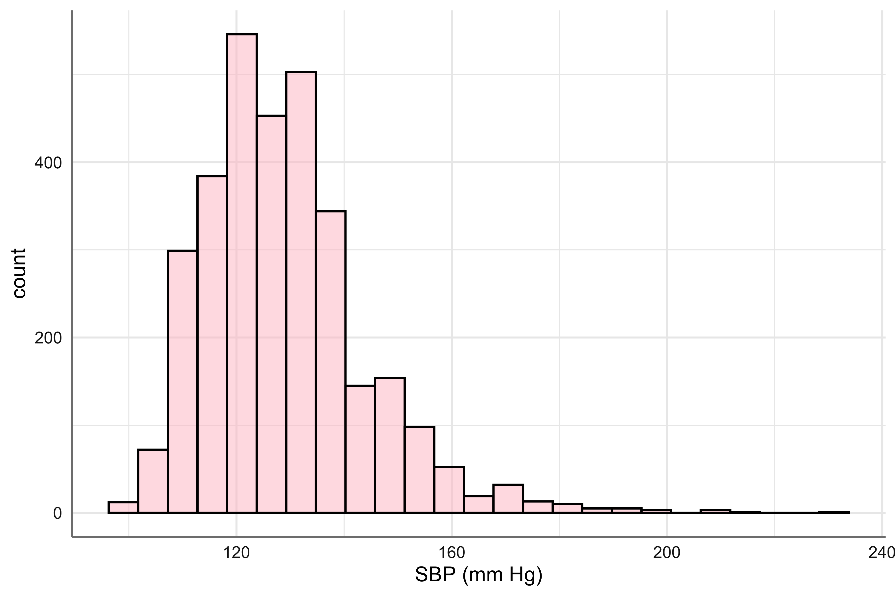
Important
The bars are not at the centre of the plot, that means we have cases (very few of them) with high values of cholesterol. In other words, the distribution is clearly skewed to the right (i.e., with a positive skew).
Note
- At the start of the code, the first two lines (hidden on the final document) are:
#| label: fig-fig1#| fig-cap: "Histogram of systolic blood pressure (SBP) for the WCGS dataset."
- The label (name) of the chunk is:
fig-fig1. When the label starts withfig-, the figure is automatically numbered. To refer to Figure 3.1 in the document we type:@fig-fig1. - The option
colrefers to the colour of the lines defining the bars; the optionfillrefers to the colour inside the bars. - You can look at the list of colours available by typing
colors()in the Console panel.
In our first plot, the \(y\)-axis shows the frequency (counts), we may want to show the density (proportion) instead. Densities are preferred when comparing two or more distributions. To choose density we use gf_dhistogram:
wcgs %>%
gf_dhistogram(~ sbp, col = "black", fill = "plum3")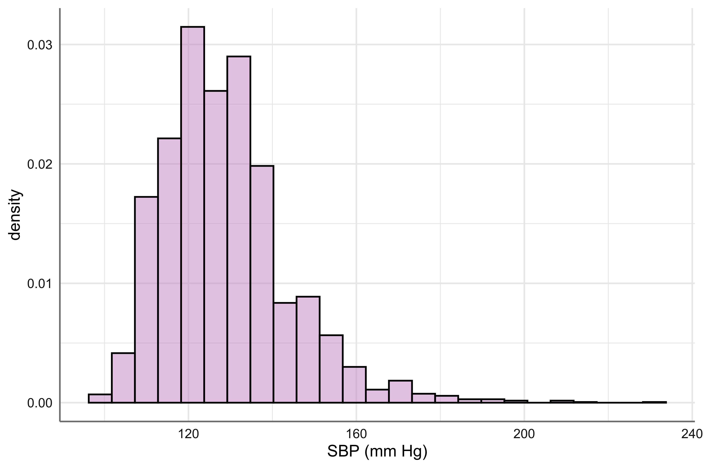
We can compare groups using the | symbol, which can be understood as given or by:
wcgs %>%
gf_dhistogram(~ sbp|chd, col = "black", fill = "slategray3")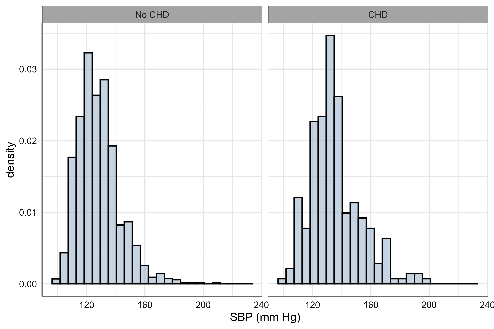
3.3.2 Density plots
An alternative to histograms is density plots.
birthwt %>%
gf_dens(~ bwt, col = "cadetblue", lwd = 1)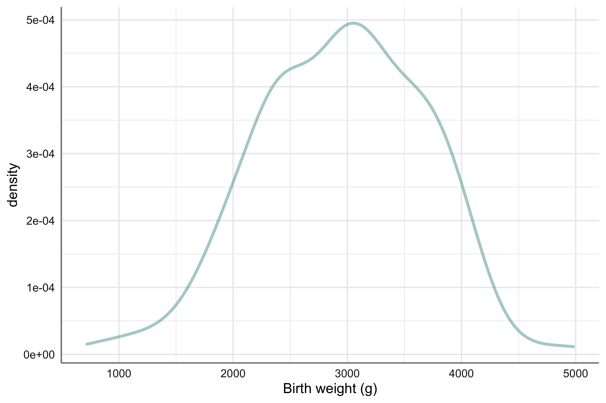
We can use superimposed density plots to compare distributions.
birthwt %>%
gf_density(~ bwt, fill = ~ smoke, alpha = 0.3)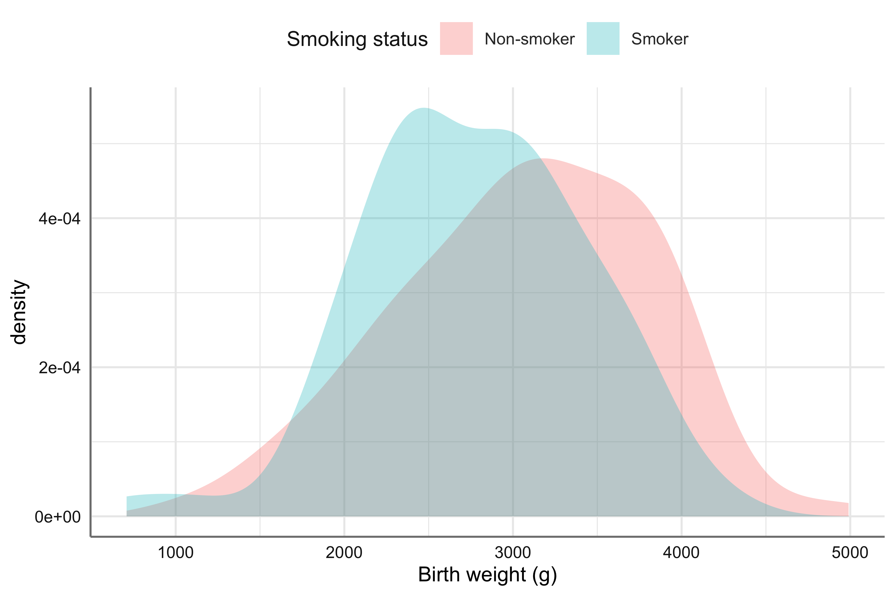
Note
- In the previous code, instead of displaying the distributions in two different panels (faceting) as we did with histograms, we are displaying them in the same panel but super-imposed.
- By using the option
fill = ~ smoke, we are tellingRto select filling colours according to levels in the variablesmoke. - With
alphawe reduce the opacity, thus increase the transparency. - With
gf_denswe plot only the contour whereas withgf_densitythe area under the curve is filled.
If you use the template from the pubh package, legends are placed on top of the plot. To specify a different location, we can use the argument legend.position in gf_theme. With legend.position we can either specify a side of the plot (e.g. "right") or give relative coordinates. For example:
birthwt %>%
gf_density(~ bwt|smoke, fill = ~ race, alpha=0.3) %>%
gf_theme(legend.position = c(0.12, 0.85))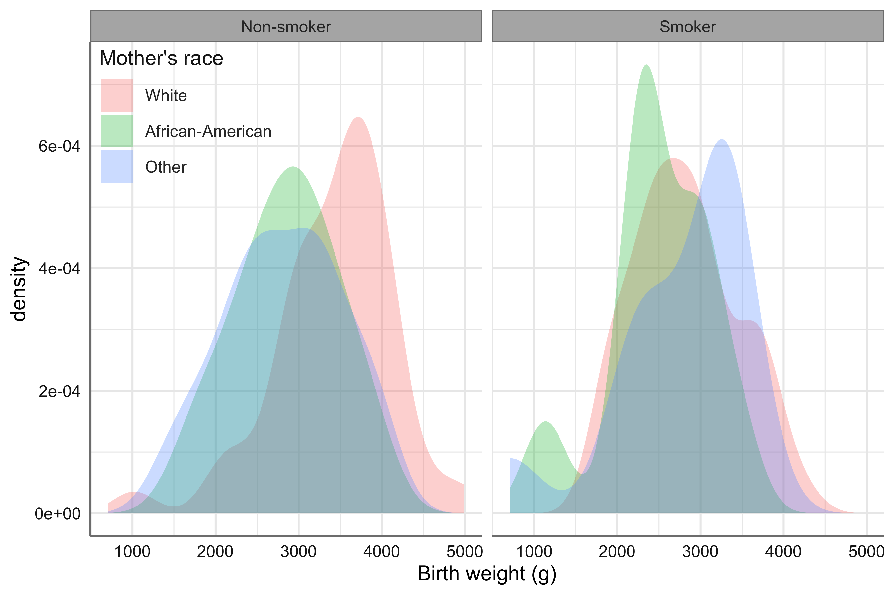
Important
Coordinates are given as c(x, y), where values of x and y go from 0 to 1 and represent a proportion in the corresponding axis.
To help on the interpretation of histograms, we can impose a density plot derived from a population with the same mean and standard deviation of the variable of interest. To make this plot, we can use the function hist_norm from the pubh package.
wcgs %>%
hist_norm(~ sbp, bins = 30) 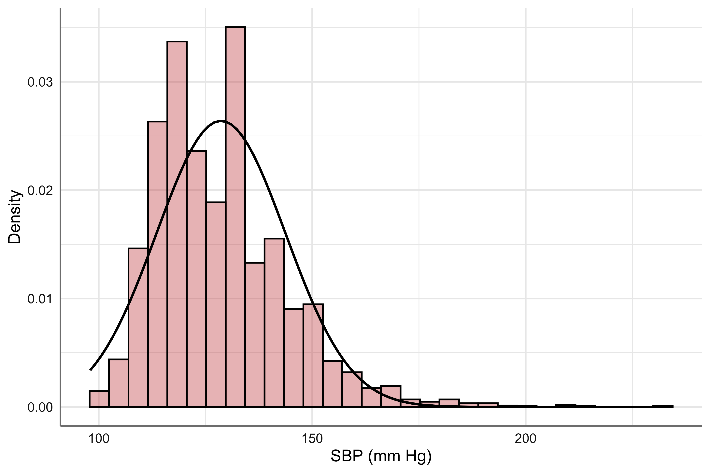
3.3.3 QQ-plots
The best way to determine if a continuous variable is normally distributed or not is with quantile-quantile plots (QQ-plots). We plot the quantiles of our variable of interest against quantiles from the standard normal distribution (which has a mean \(\mu=0\) and a standard deviation \(\sigma=1\)). This type of QQ-plots against the normal distribution are known as QQ-normal plots. If the variable is normally distributed, then a linear relationship will be observed.
To construct a QQ-plot we can use the function qq_plot from the pubh package. QQ-plots can be used even for relatively small samples.
kfm %>%
qq_plot(~ dl.milk) 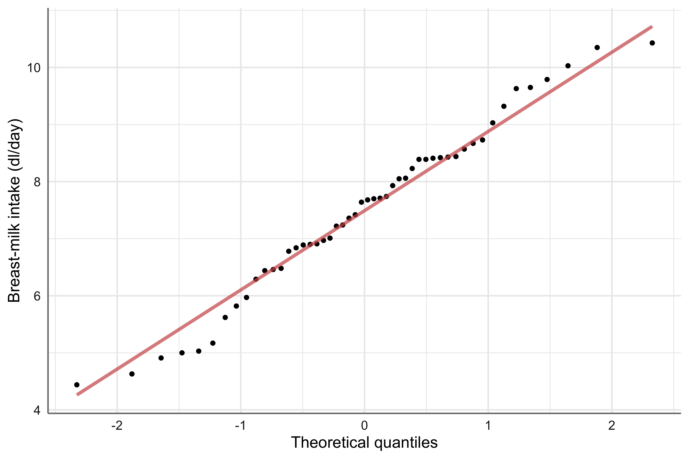
We can use plots to display more than one plot in a grid:
p1 = kfm %>%
gf_dens(~ dl.milk, size = 1) %>%
axis_labs()
p2 = kfm %>%
qq_plot(~ dl.milk) %>%
axis_labs()
plots(p1, p2, n_columns = 2, tags = "a")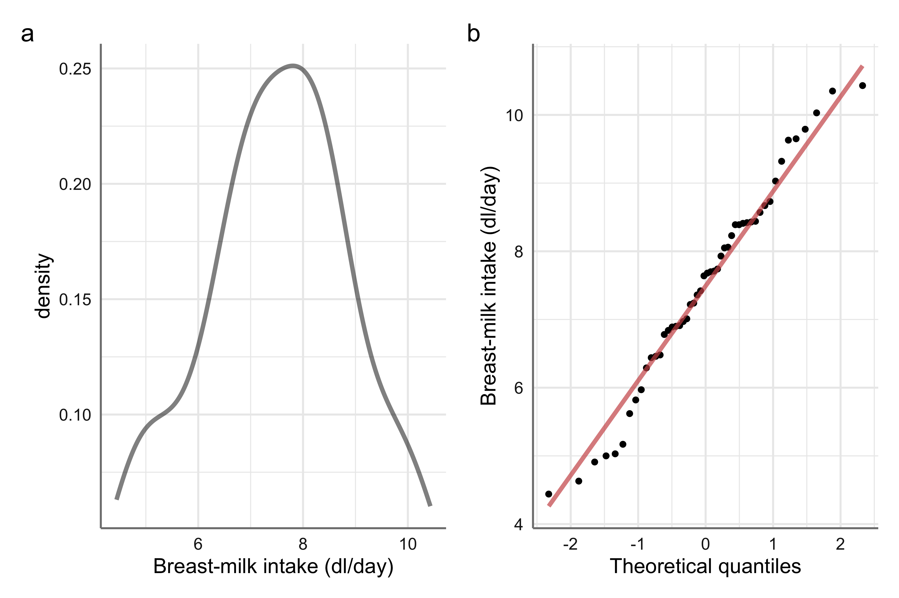
Note
- The argument
n_columns = 2is used to display the two plots on the same row. By defaultn_columns = 1. - With
tags = "a"we are using lower case auto caption. - We need to include axis_labs when we display more than one plot as
ggormuladoes not longer recognise the original label of the variable.
A variable that is positive-skewed is \(J\)-shaped in a QQ-plot.
Exercise: Using a QQ-plot, determine if SBP from normal subjects (no CHD event) in the
WCGSdataset follows a normal distribution.
wcgs %>%
filter(chd == "No CHD") %>%
copy_labels(wcgs) %>%
qq_plot(~ sbp)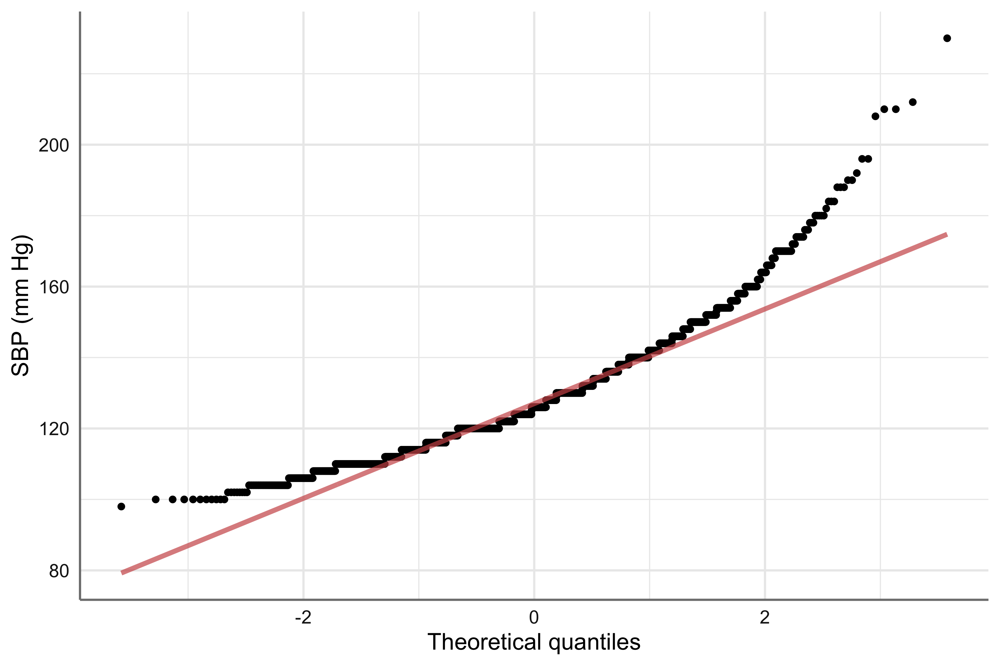
Answer: The QQ-plots shows that the distribution of SBP in control subjects is positive skewed.
3.4 Associations between continuous variables
3.4.1 Scatter plots
We use scatter plots to look at the relationship between two continuous variables. By default, the dependent variable (response) is plotted on the \(y\) axis while the independent variable (explanatory) is plotted on the \(x\) axis.
From the kfm dataset, let’s see if there is a relationship between the weight of the mother and the breast-milk intake of the child.
kfm %>%
gf_point(dl.milk ~ mat.weight, pch = 16,
color = ~ sex, size = 1.5)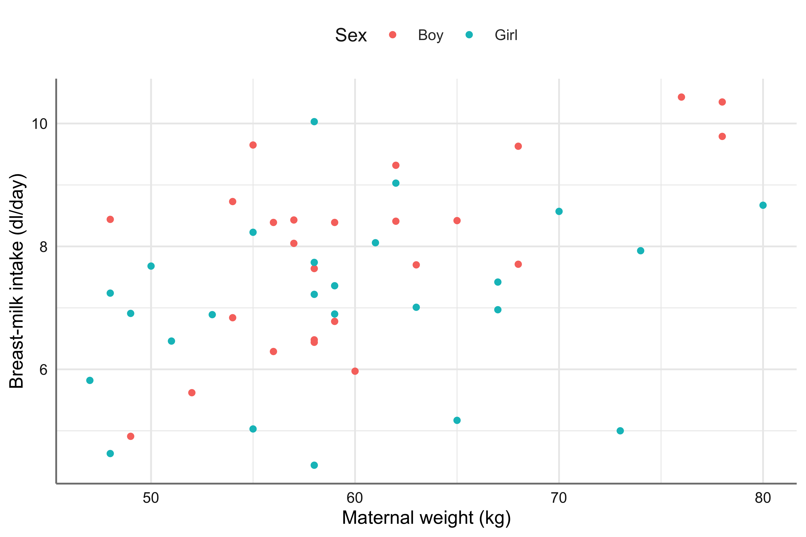
Tip
The pch argument in gf_point can be used to specify the symbol to plot the data. The default is pch = 16 which uses filled circles.
Figure 3.12 shows the most common symbols used in R. Symbols are defined with the option pch. For example, pch = 17 would use filled triangles. You can also use symbols from the keyboard, for example pch = "+", pch = "o", pch = "@", etc. When we have an enormous sample size, and we want to use a tiny symbol, we can type: pch = ".", alternatively, play with the option size.
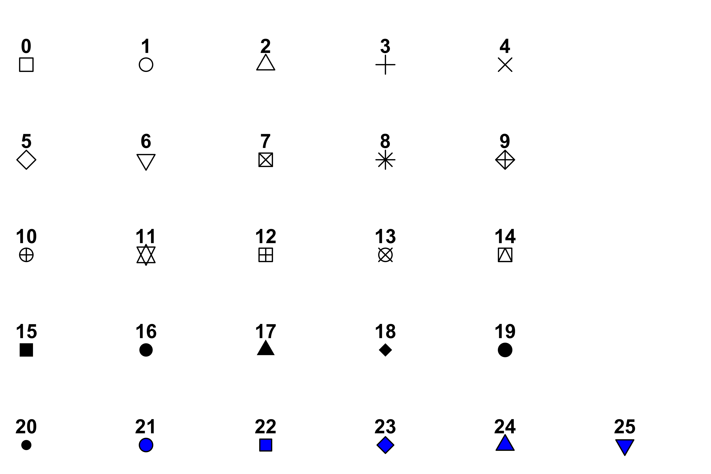
R.The advantage of ggplot2 and ggformula is that plots can be extended and used for multivariate graphical analysis. For example, we could add a line representing a linear fit:
kfm %>%
gf_point(dl.milk ~ mat.weight) %>%
gf_lm(interval = "confidence", col = "indianred",
fill = "indianred")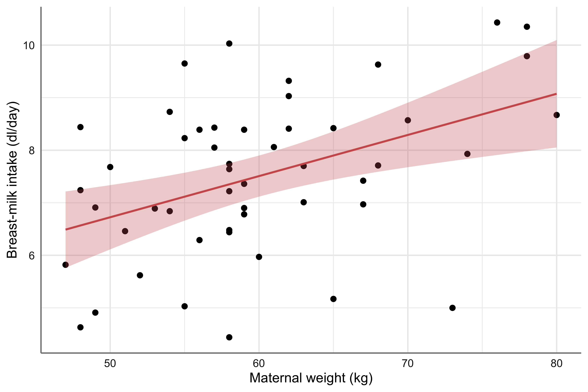
Note
- We use
gf_lmto fit a linear model (lm) andgf_smoothto show the trend (loess fit). - The default is to not show a band (
interval = "none"). In the current example, we are showing the confidence intervals around the predicted fitted values.
We can plot, on the same panel, the relationship between maternal weight and breast-milk intake by sex.
kfm %>%
gf_point(dl.milk ~ mat.weight,
pch = ~ sex, col = ~ sex) %>%
gf_lm(col = ~ sex)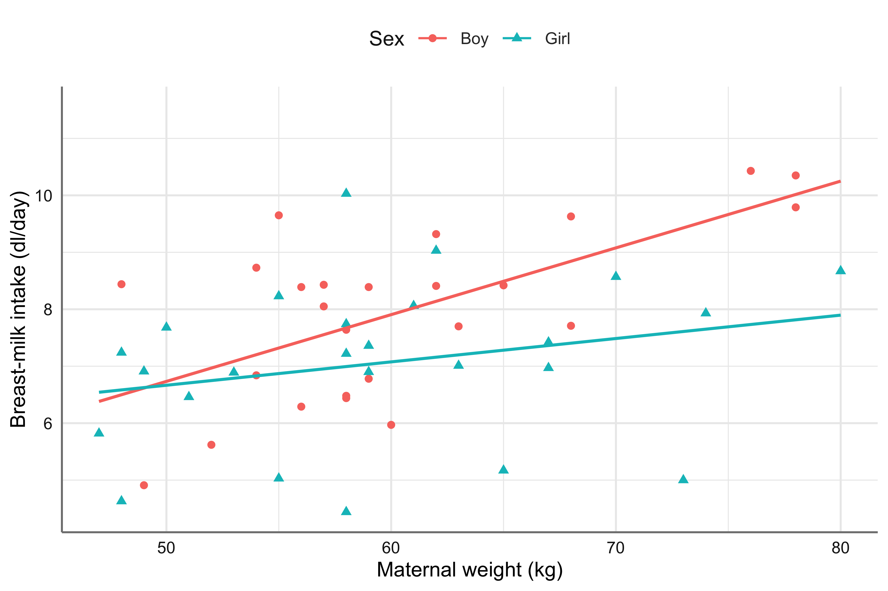
The package ggsci contains different palettes of colours for the most important journals (including Nature, Science, NEJM, etc.). Some examples:
kfm %>%
gf_point(dl.milk ~ mat.weight,
pch = ~ sex, col = ~ sex) %>%
gf_lm(col = ~ sex) %>%
gf_refine(scale_color_jama()) 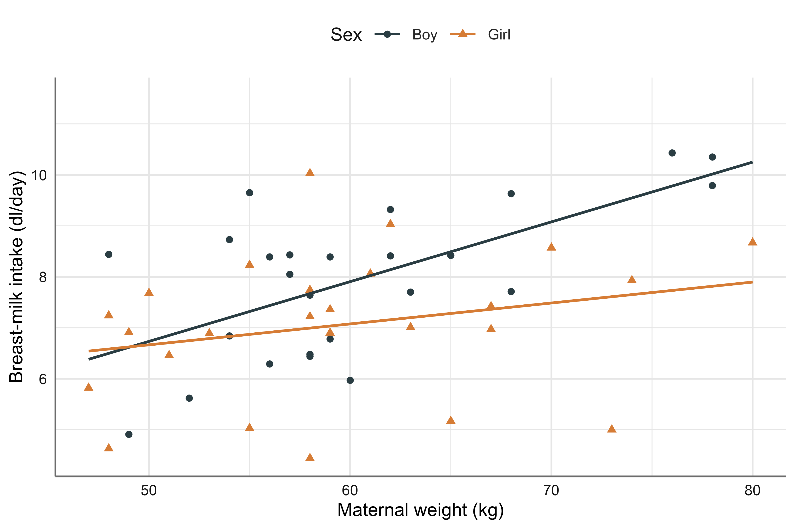
We already learnt how to construct conditional plots, i.e., to display plots in different panels given a particular condition (using the | symbol).
Exercise: Construct a plot showing the relationship between maternal weight and breast-milk intake by sex using one panel for each sex. Include a linear fit to your plot with corresponding bands of confidence intervals.
kfm %>%
gf_point(dl.milk ~ mat.weight|sex, pch = 20) %>%
gf_lm(interval = "confidence", col = "indianred",
fill = "indianred")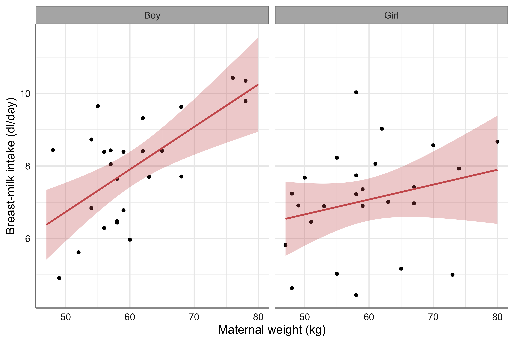
3.4.2 Scatter plot matrix (supplementary, optional sub-section)
When we are working with more than two continuous variables and we want to look at potential correlations between them, we can generate a single plot, with all two-variable combinations displayed in different panels. This kind of plot is known as a scatter plot matrix and we can construct them with ggpairs from the package GGally.
Tip
GGally has two other functions that can also construct a scatter plot matrix: ggduo and ggscatmat; ggapairs is however, more flexible.
For example, we could be interested in looking at the relationship between pollution, expressed in ozone concentration, in relation with other environmental variables. We load the dataset:
data(airquality)
airquality <- na.omit(airquality)
names(airquality)[1] "Ozone" "Solar.R" "Wind" "Temp" "Month" "Day" Next, we define the variable Month as a factor.
mes = c("May", "Jun", "Jul", "Aug", "Sep")
airquality = airquality %>%
mutate(
Month = factor(Month, labels = mes)
)Function ggpairs does not work well with labelled datasets so we are going to generate a vector with the labels of the variables:
air = c("Temperature (F)", "Wind (mph)",
"Radiation (A)", "Ozone (ppb)")In our first scatter plot matrix, we are going to show also the loess trend:
airquality %>%
ggpairs(
columns = 4:1,
lower = list(continuous = wrap("smooth_loess", alpha = 0.5,
shape = 20, size = 0.9,
color = "cadetblue")),
columnLabels = air
)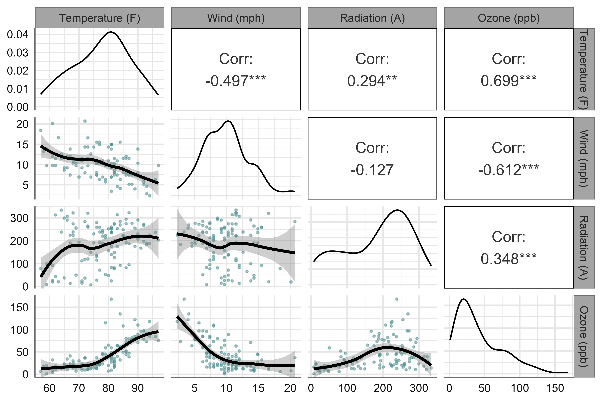
Note
- With option
columnswe select which columns of the dataset we want to plot. The default (if omitted) is to plot all. - We selected columns from 4 to 1 because we want for
Ozoneto be displayed on the \(y\)-axis. - We use option
lowerto indicate what we want to plot on the lower diagonal. - We add a loess trend with
smooth_loess. For a linear model, we would usesmooth. - The diagonal shows the distributions of each variable. For continuous variables, the diagonal displays density plots and for categorical variables shows bar charts.
- To understand the plot, focus on the bottom row. In panels of the bottom row, ozone is plotted on the \(y\)-axis; first against temperature, next against wind and finally, against solar radiation.
The airquality dataset includes a categorical variable, Month that we can use to stratify continuous variables.
airquality %>%
ggpairs(
columns = 4:1,
mapping = aes(color = Month, alpha = 0.8),
lower = list(continuous = wrap("points",
shape = 20, size = 1)),
upper = list(continuous = wrap("cor", size = 2)),
columnLabels = air
)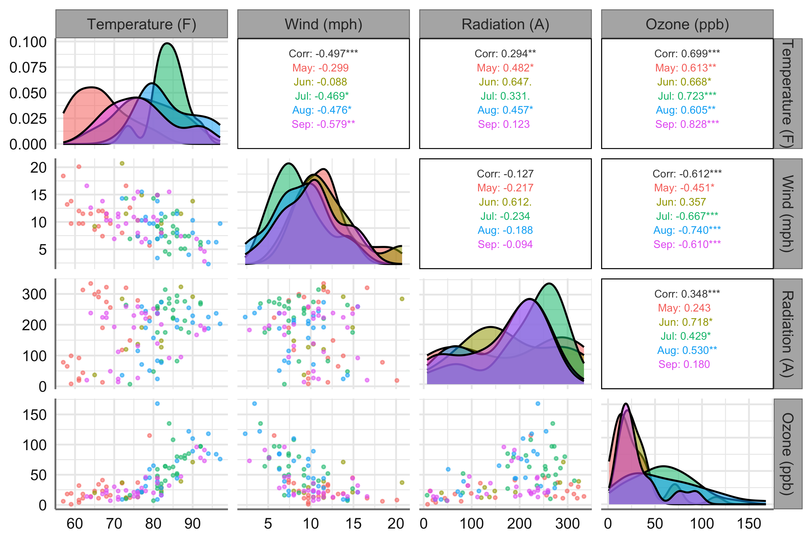
Important
- We use
mapping, a function fromggplot2to stratify byMonth. Please notice thatggplot2does not uses formulas, hence the lack of the tilde (~). - We used option
"points"as to display only symbols with no added fit. - If we use
"smooth"or"smooth_loess"we would have added a fit for each month making the plot harder to interpret. - We included the option
upperonly to decrease the size of the font tosize = 2, so the information of the correlations fit well within the panels.
If our data is labelled, we need to remove the labels for ggpair to work. As usual, as long as we don’t assign the commands of the pipe-workflow to a variable (data frame) then our alterations will not be stored and will have only a local effect.
For example, let’s say we would like to look at relationships within the kfm dataset. In the following code, we remove the labels and we change the reference level of sex, just to display boys in blue and girls in pink.
kfm %>%
remove_all_labels() %>%
mutate(
sex = relevel(sex, ref = "Girl")
) %>%
ggpairs(
columns = c(4:7, 2),
mapping = aes(color = sex, alpha = 0.8),
lower = list(continuous = wrap("points",
shape = 20, size = 1)),
upper = list(continuous = wrap("cor", size = 3)),
columnLabels = c(
"Child weight",
"Milk-substitute",
"Maternal weight",
"Maternal height",
"Breast-milk"
)
)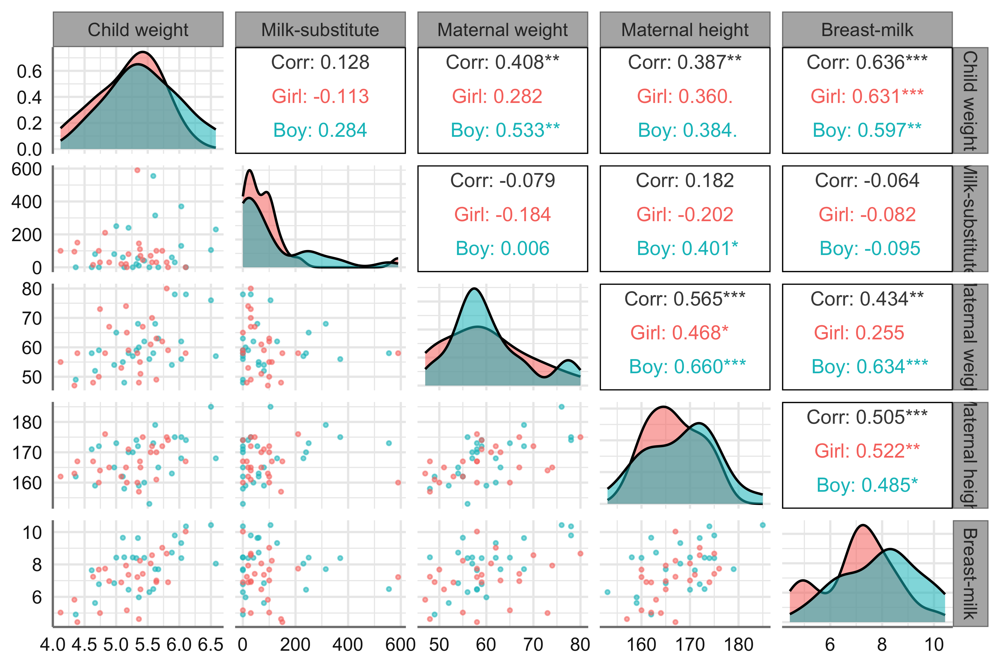
kfm dataset.3.4.3 Correlation plots
An alternative to scatter-plot matrices are correlation plots:
airquality %>%
select(- c(Month, Day)) %>%
correlation(rename = air, method = "spearman") %>%
summary() %>% plot(show_data = "points") %>%
gf_theme(theme_lucid())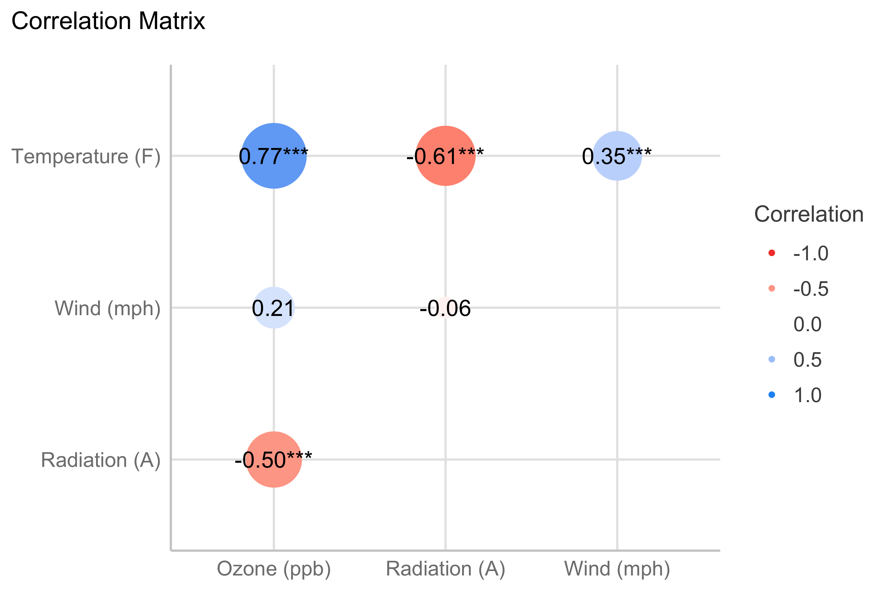
airquality dataset.
Important
- Correlation plots have the disadvantage of not showing the actual relationship between the variables, nor to their distributions but only a visual representation of the correlation matrix.
- Correlation is covered in the regression section.
3.4.4 Line charts
Sometimes, we don’t want to fit a trend or a linear model, but to actually connect all observations. With gf_path we connect observations in the order in which they appear in the data, whereas with gf_line we connect them in the order of the variable on the \(x\)-axis.
Perhaps, the best example when we want to connect observations is when we are working with time series data.
Download the file fluraw.csv from Moodle, save it on your data directory and load it to the session.
flu = read_csv("data/fluraw.csv")
head(flu)# A tibble: 6 × 5
week child young mid old
<date> <dbl> <dbl> <dbl> <dbl>
1 1957-08-25 0 0 1 1
2 1957-09-01 0 2 6 1
3 1957-09-08 0 2 4 2
4 1957-09-15 23 73 63 11
5 1957-09-22 63 208 173 41
6 1957-09-29 73 207 171 27flu = flu %>%
var_labels(
week = "Date"
) %>%
as.data.frame()The data frame is recorded in what is known as wide format. We will use the function pivot_longer from dplyr to transform it to long format.
flu_melt = flu %>%
pivot_longer(
cols = !week,
names_to = "agegrp",
values_to = "cases"
)
flu_melt %>% head()# A tibble: 6 × 3
week agegrp cases
<date> <chr> <dbl>
1 1957-08-25 child 0
2 1957-08-25 young 0
3 1957-08-25 mid 1
4 1957-08-25 old 1
5 1957-09-01 child 0
6 1957-09-01 young 2
Note
- We select the columns that we want to rearrange in
cols. With!week, we are making a negative selection (read as not week). - The name of the new categorical variable is gen to
names_to. The names of the columns are used as levels of the variable. - The actual values are stored in another variable, which name can be given at
values_to.
flu_melt %>%
gf_line(cases ~ week, col = ~ agegrp, size = 0.8) %>%
gf_labs(col = "Age group") %>%
gf_refine(scale_color_npg()) 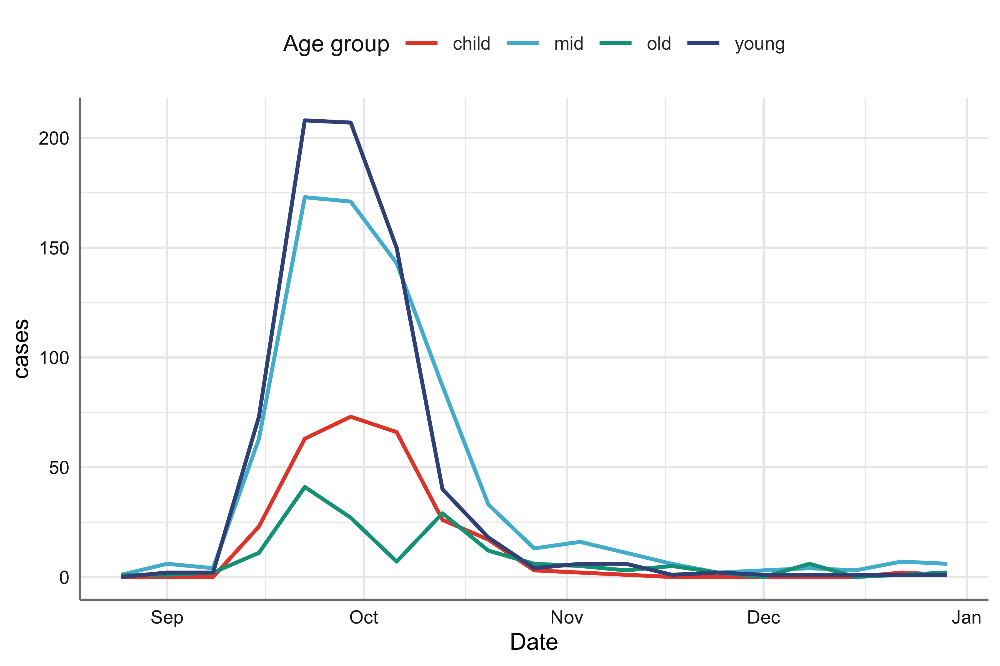
Note
- With option
sizewe can modify the width of the lines. - In this example, instead of labelling the data, I specified the names of the axis as part of the plot.
- The last line of code is optional and it uses the palette of colours preferred by Nature (Nature Publishing Group).
3.4.5 Kaplan-Meier plots
Step plots are a variation of line charts in which the lines connect observations by steps instead of direct lines. The best example of step plots are those used in survival analysis as proposed by Kaplan and Meier.
For our example, we will use data about survival in patients with advanced lung cancer. We load the survival package to generate the information that we need to make a Kaplan-Meier plot. After loading the dataset, we transform variable sex to a factor.
Caution
For this tutorial, we are not interested in the modelling, only on constructing and interpreting the plot.
library(survival)
data(cancer, package = "survival")lung = cancer %>%
mutate(
Sex = factor(sex, labels = c("Male", "Female"))
)Next, we estimate survival stratified by sex:
surv_fit = survfit(Surv(time, status) ~ Sex, data = lung)
surv_fitCall: survfit(formula = Surv(time, status) ~ Sex, data = lung)
n events median 0.95LCL 0.95UCL
Sex=Male 138 112 270 212 310
Sex=Female 90 53 426 348 550We can use autoplot to construct the Kaplan-Meier plot:
autoplot(surv_fit) %>%
gf_labs(x = "Time (days)", y = "Survival")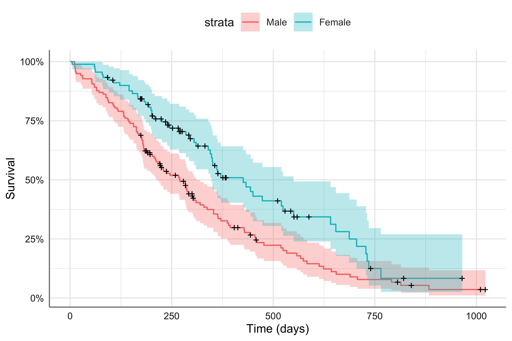
3.5 Comparing groups
Many times, we are interested in comparing groups, for example:
- treatment vs control
- cases vs control
- drug A vs drug B
- females vs males
In these examples, the groups or cohorts represent the explanatory (exposure) variable. If the outcome is continuous, then we are interested in comparing distributions and/or a measure of central tendency.
3.5.1 Box plots
When we are comparing continuous variables, between two or more groups, box plots are the best option, particularly if the number of observations in the groups is relatively large (\(\geq\) 30).
We are going to use the function box_plot from the pubh package to construct box plots.
wcgs %>%
box_plot(chol ~ chd)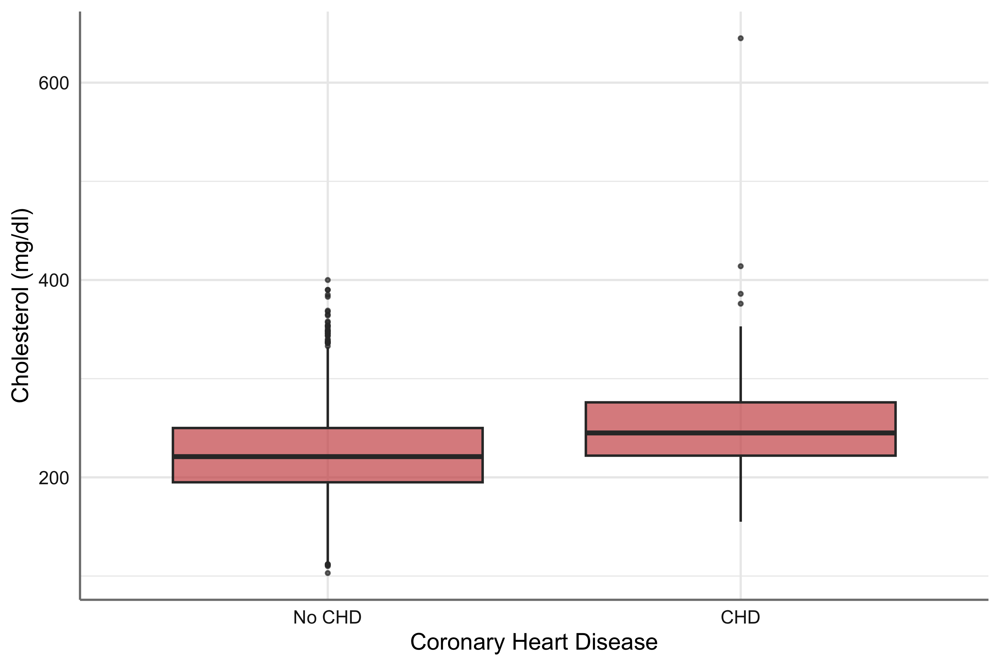
In the previous figure the presence of an outlier is clear. If we would like to remove that outlier, we would need to declare that in the report. For demonstration purposes, if we do not want to show the outlier in the plot, we have the option to filter the data as shown in the following code:
wcgs %>%
filter(chol < 500) %>%
copy_labels(wcgs) %>%
box_plot(chol ~ chd, fill = "thistle3", alpha = 0.7)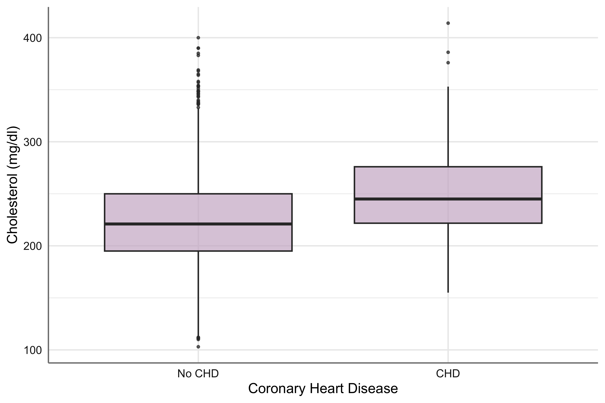
3.5.2 Significant lines (supplementary, optional sub-section)
Exercise: Construct a plot comparing the distributions of breast-milk intake (
dl.milk) by sex from thekfmdata set.
kfm %>%
box_plot(dl.milk ~ sex)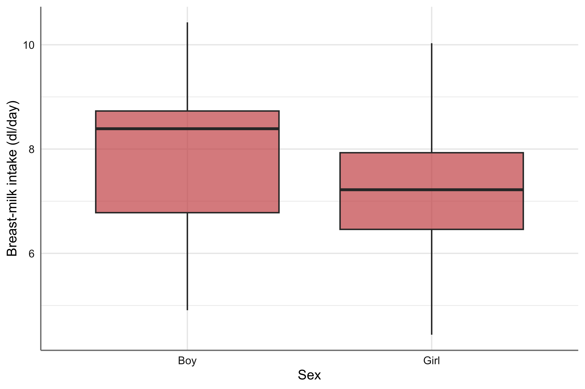
We can use box plots to show the results of our analysis. It happens that there is a significant difference in the mean value of breast-milk intake between boys and girls (we do not need to worry how to test this, yet). In our final report, if we would like to include a figure to show this difference, we can draw a line over the groups that we are comparing and type an asterisk to indicate the difference. To do that, we can use gf_star from the pubh package.
kfm %>%
box_plot(dl.milk ~ sex) %>%
gf_star(x1 = 1, y1 = 10.9, x2 = 2, y2 = 11, y3 = 11.2)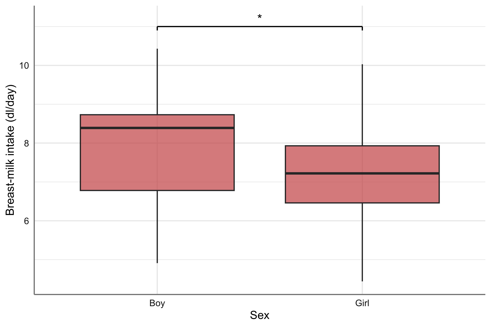
Note
- By default, the centre of the boxes is drawn over integer numbers in the \(x\)-axis, starting with one.
- We are providing points of reference to draw the line with
gf_star. gf_stardraws a horizontal line from coordinate \((x_1, y_2)\) to coordinate \((x_2, y_2)\). Draws vertical lines below the horizontal line, towards data, from \((x_1, y_2)\) to \((x_1, y_1)\) and from \((x_2, y_2)\) to \((x_2, y_1)\). Finally, adds text above the horizontal line, at the mid point between \(x_1\) and \(x_2\), at height \(y_3\).
It is possible to show the actual \(p\)-value in the plot. We can also, keep adding layers to the plot; for example, we can show all the observations, which we will jitter on the \(x\)-axis, so they can be better appreciated:
kfm %>%
box_plot(dl.milk ~ sex, alpha = 0.5) %>%
gf_jitter(dl.milk ~ sex, width = 0.1, height = 0,
alpha = 0.8, pch = 20, size = 0.6) %>%
gf_star(1, 10.9, 2, 11, 11.4,
legend = 'p = 0.035', size = 3) 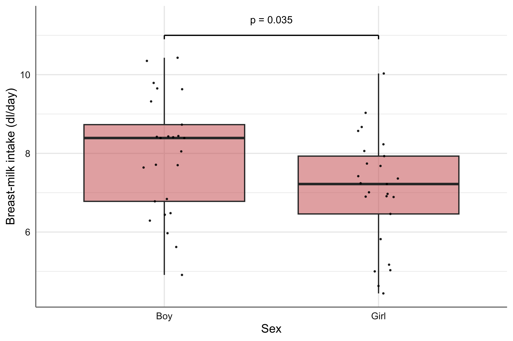
Package ggpubr includes a function, stat_compare_means that automatically calculates coordinates to show the results of the hypothesis testing. In that sense, it’s easier to use than gf_star but it’s less flexible.
Warning
ggpubr does not work with formulas, instead, shares the same syntax of ggplot2 so layers are added with + instead of %>%.
kfm %>%
box_plot(dl.milk ~ sex, alpha = 0.5) %>%
gf_jitter(dl.milk ~ sex, width = 0.1, height = 0,
alpha = 0.8, pch = 20, size = 0.6) +
stat_compare_means(comparisons = list(c(1, 2)),
method = 't.test')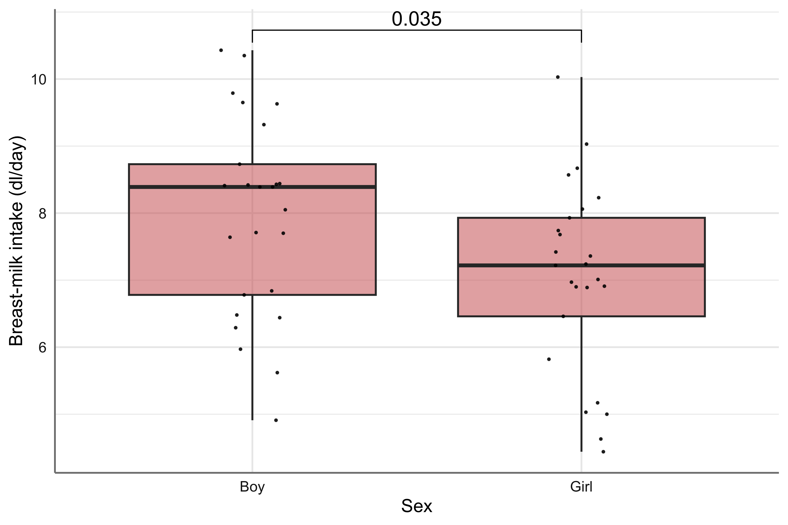
3.5.3 Strip charts
When we want to compare groups and the number of observations is relatively small (\(n\) < 30) box plots are not good. It is better to show all data in a variation of a scatter plot known as strip plot or strip chart.
We will use the data energy from the ISwR package about the energy expenditure of lean and obese women.
data(energy, package = "ISwR")
head(energy) expend stature
1 9.21 obese
2 7.53 lean
3 7.48 lean
4 8.08 lean
5 8.09 lean
6 10.15 leanenergy = energy %>%
var_labels(
expend = "Energy expenditure (MJ)",
stature = "Stature"
)
write_rds(energy, "data/energy.rds")energy %>%
gf_jitter(expend ~ stature, width = 0.1,
height = 0)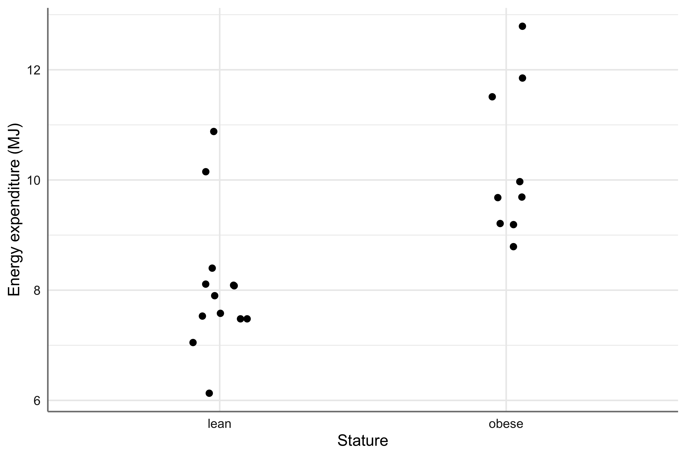
It is easier to compare the groups if we include error bars showing the 95% confidence interval (CI) around the mean. To do that, we can use the function strip_error from the pubh package.
energy %>%
strip_error(expend ~ stature, size = 2)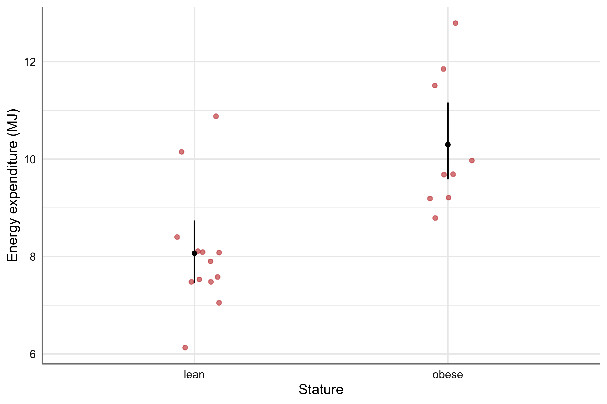
Note
In strip_error, the argument size refers to the size of the symbols used to plot the individual observations.
The rationale to add a significant line is the same as for box plots.
energy %>%
strip_error(expend ~ stature, size = 2) %>%
gf_star(1, 13.3, 2, 13.4, 13.5)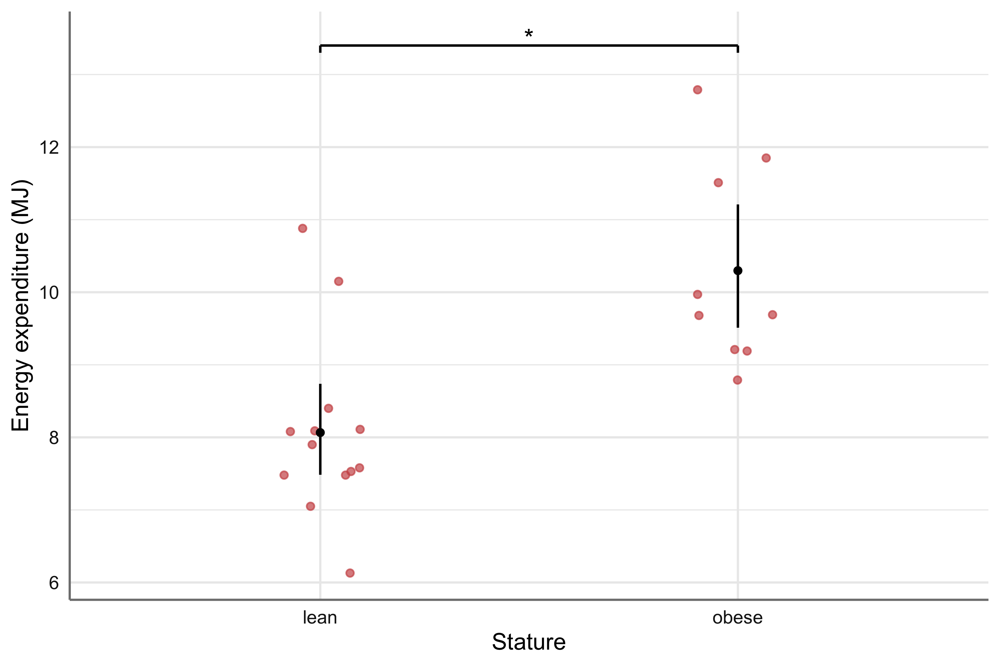
We can also construct strip plots with error bars, by groups.
birthwt %>%
strip_error(bwt ~ smoke, pch = ~ Race, col = ~ Race) %>%
gf_refine(scale_color_jama()) 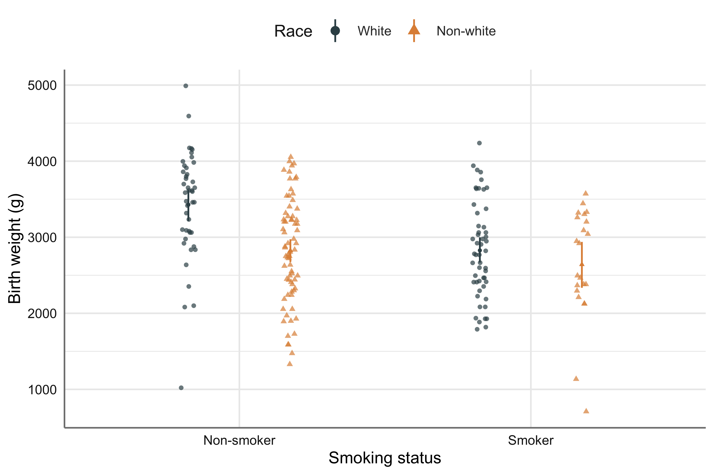
3.5.4 Violin plots (supplementary, optional sub-section)
Violin plots combine ideas from both density plots and box plots. They show density distributions and can incorporate other elements, like strip charts.
kfm %>%
gf_violin(dl.milk ~ sex, fill = ~ sex, alpha = 0.3) %>%
gf_jitter(dl.milk ~ sex, width = 0.1, height = 0)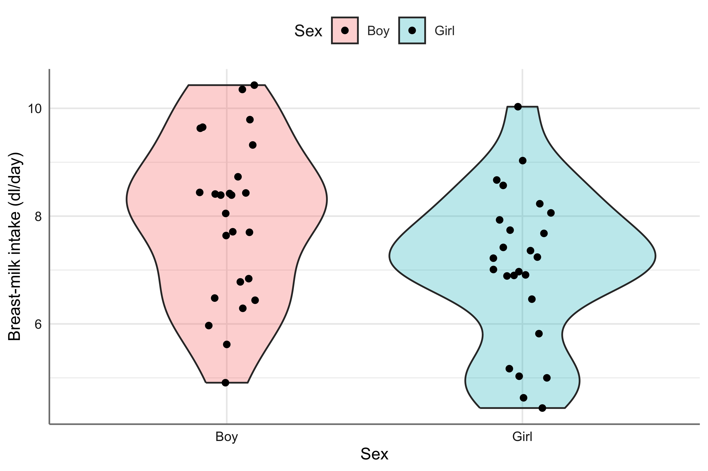
For larger datasets, we can add summary of statistics using error bars indicating the mean and 95% CI around mean values.
wcgs %>%
gf_violin(sbp ~ chd, fill = ~ beh_pat, alpha = 0.3) %>%
gf_summary(fun.data = "mean_cl_boot",
geom = 'pointrange', fatten = 1,
position = position_dodge(width = 0.9)) 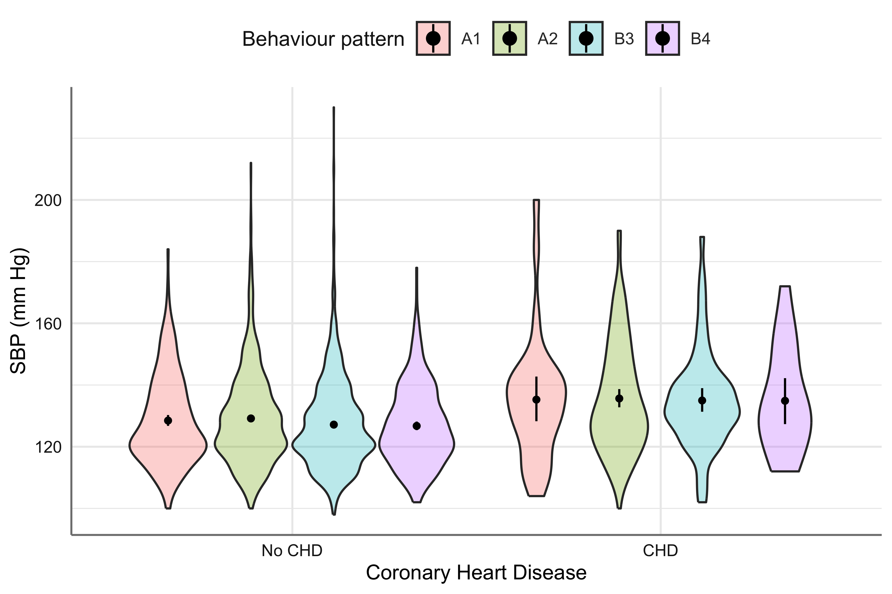
3.5.5 Bar charts
Bar charts or bar plots are used, most of the time, to display information from a table graphically. Therefore, for publications are not the best option as a table uses less space and contains better information.
For example, we can use sjplot from the sjPlot package to graphically compare the frequency distributions of babies with low birth weights by race.
birthwt %>%
select(race, low) %>%
sjplot(show.values = FALSE, show.prc = FALSE)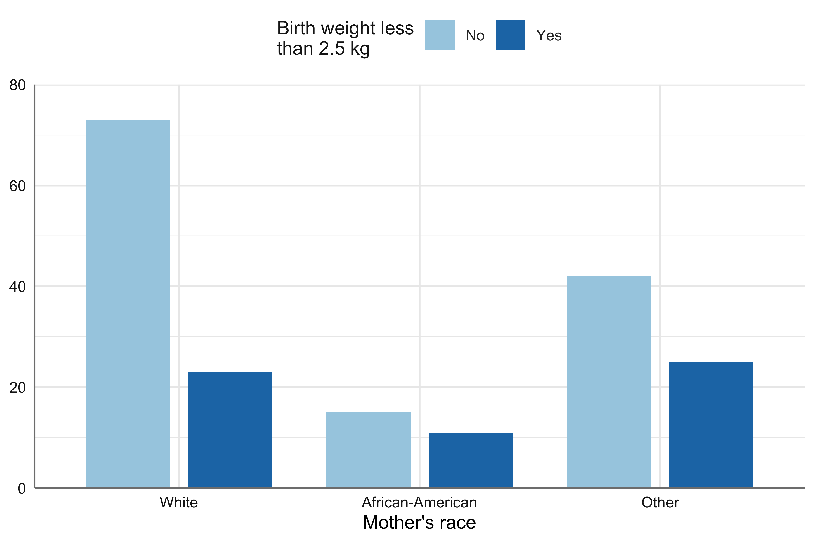
Same plot but using gf_counts from ggformula:
birthwt %>%
gf_counts(~ race, fill = ~ low, position = "dodge", alpha = 0.6) %>%
gf_refine(scale_fill_lancet())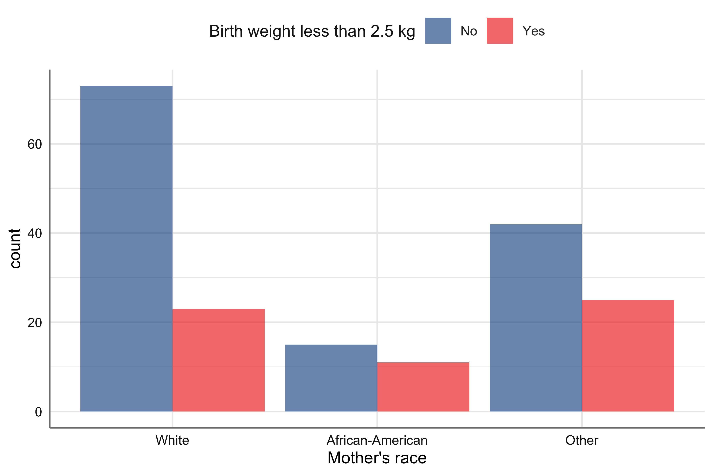
We had already shown the use of box plots. In box plots, we are comparing medians and distributions instead of means. It is because of that limitation that some authors favour the use of bar charts in which the height of the bars represent mean values for each group and error bars are included to show dispersion. For inferential statistics we would show either standard errors or 95% CIs.
In the pubh package there is a function that automatically does that.
kfm %>%
bar_error(dl.milk ~ sex) 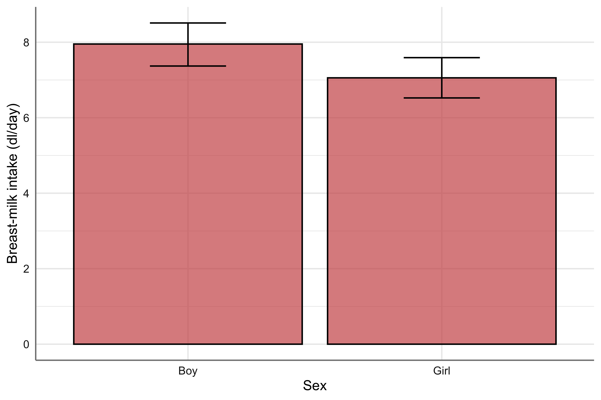
As it was the case with strip plots, we can also construct bar plots stratified by a second factor:
birthwt %>%
bar_error(bwt ~ smoke|Race, fill = 'plum3')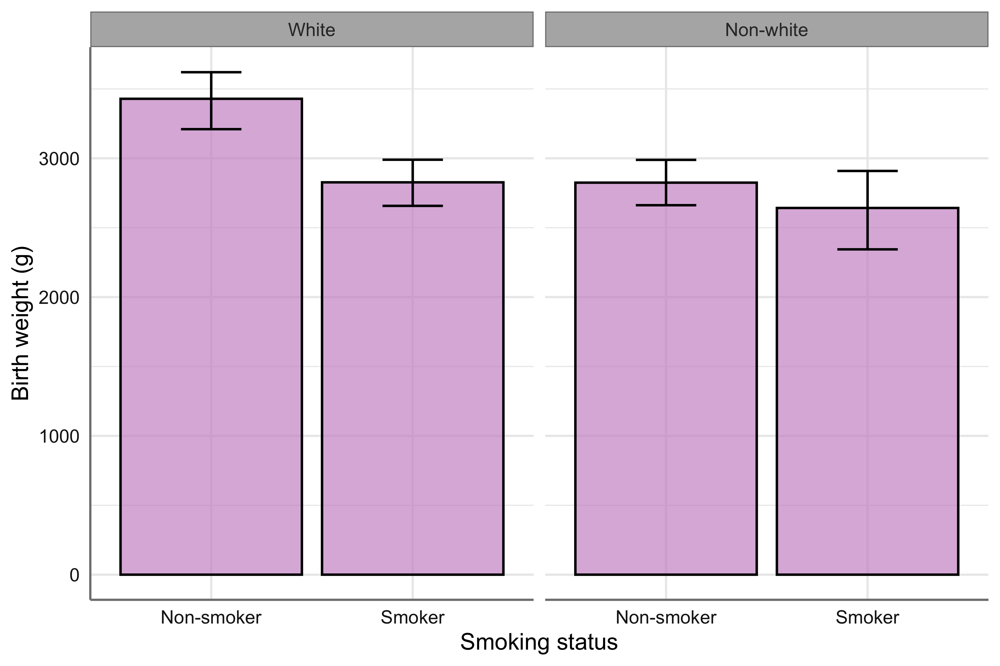
It is also possible to play with col and fill and to add more layers, like gf_star.
p1 = birthwt %>%
bar_error(bwt ~ smoke, col = ~ Race,
fill = 'white', title = "(a)") %>%
gf_refine(scale_color_lancet()) %>%
axis_labs()
p2 = birthwt %>%
bar_error(bwt ~ smoke, fill = ~ Race,
title = "(b)") %>%
axis_labs() %>%
gf_refine(scale_fill_jama()) %>%
gf_star(x1=0.8, x2=1.2, y1=3800, y2=3900, y3=3950)
autoplot(list(p1, p2))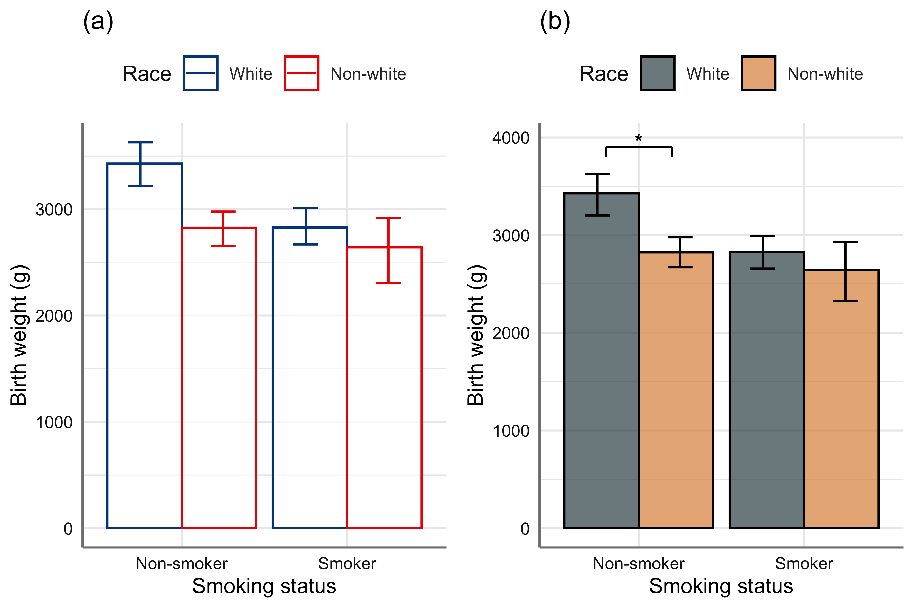
3.6 Exporting figures
When you are working in your RMarkdown documents, there is no need to export figures, and everything is done automatically.
When you run your commands interactively, plots are shown in the Plots tab. The easiest way to export them is to click on Export and select Save as PDF. PDF figures can be inserted in Word, Power Point, Keynote, Pages, etc. The plot will be saved as shown on your viewer, not always the best idea. Word and Power Point work better with .png figures.
3.6.1 Postscript figures
We have more control if we export the file using the function pdf than exporting them with the viewer. When we use this option, the instruction could be part of our script file. We need three sections of code to export a figure this way:
- The first section creates the file and defines the size of the plot. The units are in inches.
- The second section makes the plot.
- The third section is used to close the device. Is a way to tell the system that we have finished the plot.
pdf("figures/fig6.pdf", height = 4, width = 5.3, pointsize = 9)
birthwt %>%
gf_density(~ bwt|smoke, fill = ~ race, alpha=0.3)
dev.off()For publications, is more common that publishers will ask for a .eps file (encapsulated postscript). The command is very similar.
postscript("figures/fig15.eps", height = 4, width = 5.3,
pointsize = 9, horizontal = FALSE)
kfm %>%
gf_point(dl.milk ~ mat.weight, pch = ~ sex, col = ~ sex) %>%
gf_lm(col = ~ sex) %>%
gf_refine(scale_color_jama())
dev.off()